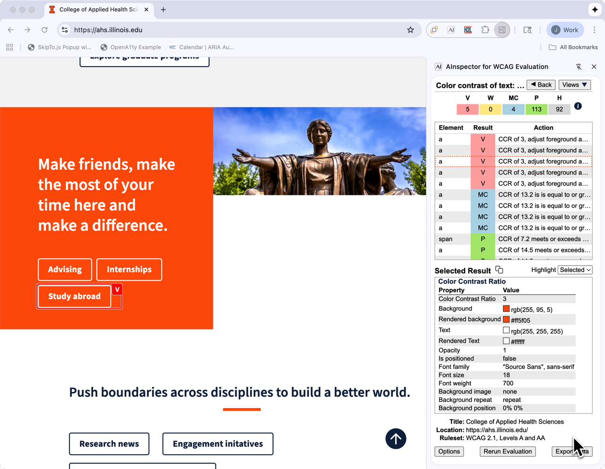

Color Contrast Rule Results

Color Contrast Information
| Property | Description |
|---|---|
| Color Contrast Ratio |
The color contrast ratio is an indication of how easy it for people to see text content. The higher the ratio the easier it is for people to see. Formula: (L1 + 0.05) / (L2 + 0.05), where:
|
| Background | The background color property for the element, either specified by a CSS selector, or inherited from an ancestor. |
| Rendered Background | The actual rendered background color that includes opacity settings. |
| Text | The text color property for the element, either specified by a CSS selector or inherited from an ancestor. |
| Rendered Text | Actual rendered background color that includes opacity settings. |
| Opacity | The opacity value for the text color. |
| Is positioned | Us the element using a CSS absolute positioning, which may mean the background is different that background color value if the element has a transparent background. |
| Font family | The font family used to render the text, while this does not affect the color contrast ratio calculation, some fonts maybe more difficult to perceive than others. |
| Font size | Larger fonts are easier to perceive than smaller fonts and WCAG requires a 3:1 contrast ratio fir large text for AA conformance and 4.5:1 for AAA conformance. |
| Font weight | Bold text is easier to perceive than normal text and is a factor in determining if text is large enough to use the WCAG 3:1 and 4.5:1 contrast ratios for color contrast. |
| Background image | When the text is over an element with a background image the evaluation library cannot determine the color contrast ratio and the user must perform a manual check to determine if color contrast requirements are met. |
| Background repeat | Provides information about how the background image is being rendered, which maybe useful for manual checking of the contrast ratio. |
| Background position | Provides information about how the background image is being rendered, which maybe useful for manual checking of the contrast ratio. |